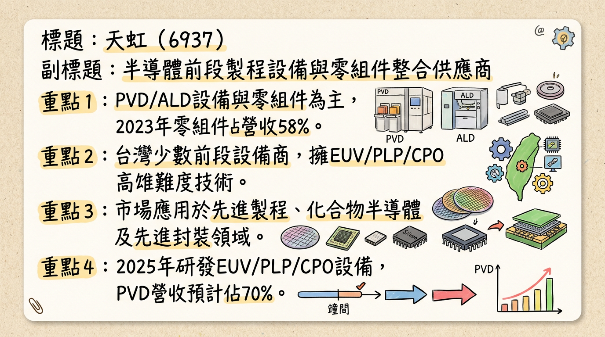
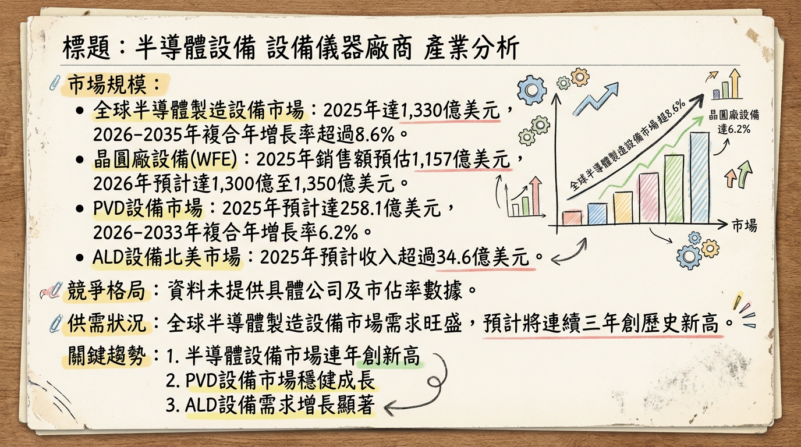
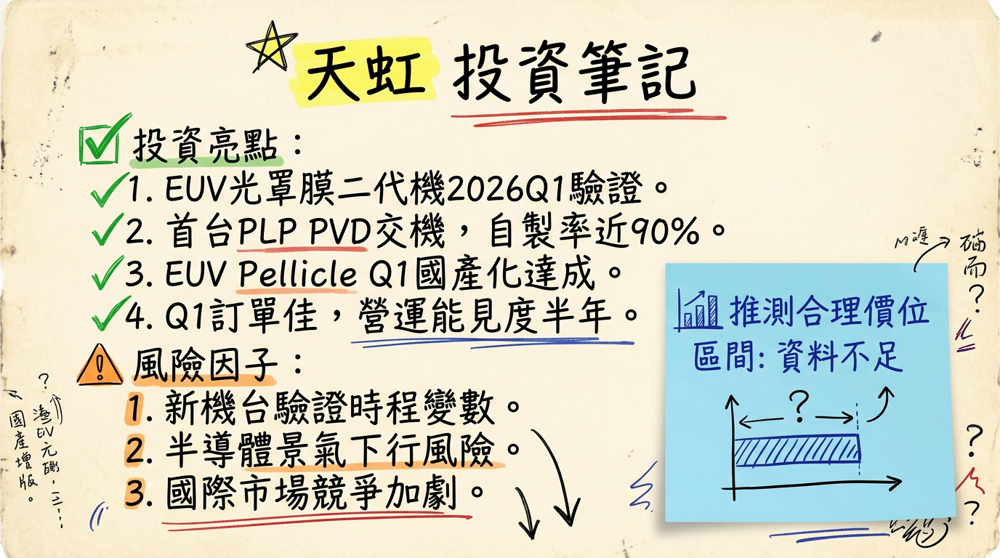

天虹為台灣半導體前段製程設備與零組件領導廠商，2025年雖受半導體產業逆風及客戶延遲交機影響營收下滑，然憑藉自主研發的310x310mm PLP PVD、EUV Pellicle量測等先進設備於2026年陸續導入客戶，並受惠於AI/HPC帶動的先進製程與先進封裝強勁需求，預計2026年營收將重返成長軌道並挑戰歷史新高，技術收穫與國際布局推進為關鍵成長動能。
天虹科技（6937）是台灣少數提供半導體前段製程設備的廠商，核心產品包括物理氣相沉積（PVD）及原子層沉積（ALD）設備，這兩者是現今半導體製程中不可或缺的機台。公司亦提供鍵合機（Bonder）、解鍵合機（De-Bonder）等設備。除了設備銷售，天虹也從事半導體設備零組件的製造與維修服務，涵蓋薄膜、蝕刻、擴散、研磨、量測、黃光製程等設備耗材與配件。
天虹的設備廣泛應用於先進製程、化合物半導體、先進封裝及光電等領域。公司於2025年研發出EUV（極紫外光）、PLP（面板級封裝）、CPO（共同封裝光學）等高技術難度設備，可直接對標國際大廠。在海外布局方面，天虹於2025年底成立日本子公司「哲虹」，深耕日本半導體市場，初期以零組件業務為主，未來將擴展至設備業務。台灣竹北廠預計在2026年第二至三季啟用，南科廠房亦有擴充計畫。
營收結構概覽| 年度 | 設備 (%) | 零組件 (%) | 備註 (設備細項) |
|---|---|---|---|
| 2023 | 42 | 58 | - |
| 2024E | >50 | <50 | 預計設備營收佔比超越零配件 |
| 2025E | 70 (PVD) | - | 預計PVD營收佔比達70% |
| 月份 | 金額 (億元) | 月增率 (MoM) | 年增率 (YoY) |
|---|---|---|---|
| 2026/02 | 1.43 | -6.39% | +31.25% |
| 2026/01 | 1.526 | -60.17% | +21.35% |
| 2025/12 | 3.832 | +126.34% | -50.59% |
| 2025/11 | 1.693 | +0.06% | +37.17% |
| 2025/10 | 1.692 | -44.03% | +41.32% |
| 2025/09 | 3.023 | +154.46% | +107.73% |
* 毛利率：42.29%
* EPS：1.09元
全年度營收與 EPS* EPS：6.03元
* EPS：3.01元 (年減50.08%)
* EPS：約2.63元 (實際優於券商預估)
財務表現分析：天虹在2025年受到化合物半導體客戶需求疲弱及部分客戶延後交機影響，全年營收22.4465億元較2024年衰退13.26%，EPS 3.01元亦大幅年減50.08%。儘管如此，2025年第四季營收7.2166億元實現季增31.33%，且毛利率維持在42.29%，顯示營運逐步回穩。2026年初營收表現已見年增，預示著新一輪成長動能正在積蓄。
* 同步推出310×310 mm PLP去殘膠（Descum）設備，並進入客戶驗證階段。
* 2026年營收目標逐季走揚，下半年優於上半年，目標營運至少重返2024年時的高檔水準（25.87億元），並挑戰新高。
* 2026年是天虹技術收穫與國際布局推進的關鍵年。
| 券商名稱 | 目標價 (元) | 評等 | 報告日期 |
|---|---|---|---|
| 元富證券投顧 | 300 | 看多 | 2026年2月5日 |
| 理柴知道，法說最速報! | 245-250 (短線), 280 (2026年潛力) | - | 2025年12月30日 (⚠️過時) |
| 年度/季度 | 毛利率 (%) | 營業利益率 (%) | 稅後淨利率 (%) |
|---|---|---|---|
| 2024 Q1 | 45.68 | 16.56 | 16.53 |
| 2024 Q2 | 44.70 | 15.37 | 18.97 |
| 2024 Q3 | 43.66 | 14.98 | 14.71 |
| 2024 Q4 | 42.91 | 16.05 | 14.30 |
| 2025 Q1 | 41.91 | 5.92 | 10.63 |
| 2025 Q2 | 39.21 | 5.95 | 3.68 |
| 2025 Q3 | 36.51 | 4.80 | 10.90 |
| 2025 Q4 | 42.29 | 15.23 | - |
| 2025 全年 | 40.09 | 8.64 | 9.98 |
天虹的利潤率在2025年前三季呈現下滑趨勢，主要受營收規模縮小以及化合物半導體客戶訂單延後或取消的影響。毛利率從2024年高點的45.68%降至2025年Q3的36.51%，營業利益率和稅後淨利率也同步承壓。然而，隨著2025年Q4營收季增31.33%至7.2166億元，毛利率已回升至42.29%，營業利益率也顯著反彈至15.23%，顯示營運體質在訂單回穩後迅速恢復，凸顯其產品的高附加價值與成本控制能力。2026年隨著新設備交機與營收規模擴大，預期利潤率有望進一步改善。
目前搜尋結果未直接提供天虹近4季的存貨金額與存貨週轉天數數據。然而，考量到2025年部分客戶延後交機，可能導致存貨水位短暫升高，但管理層提及2026年上半年訂單能見度佳，預期應有助於存貨去化。
目前搜尋結果未明確提供天虹近三年的具體資本支出金額與趨勢。然而，公司在資本支出方面持續投入於先進技術研發及產能擴充：
* 2025年年度現金股利為2.10252元，年度股票股利為0元。
全球半導體製造設備市場預計在2025年達到1,330億美元（年增13.7%），2026年持續成長至1,450億美元，2027年更將突破1,560億美元，連續三年創歷史新高。晶圓廠設備（WFE）市場方面，2025年銷售額預估年增11%至1,157億美元，2026年預計成長至1,300億至1,350億美元區間（年增約15-23%）。從長期看，2026-2035年CAGR將超過8.6%。
就天虹核心產品PVD設備而言，全球市場規模在2024年為243億美元，預計2025年達258.1億美元，並在2026年至2033年間以6.2%的複合年增長率成長至417.6億美元。另有報告預測PVD市場在2025年將達365.6億美元，並在2026年至2034年間以8.55%的CAGR成長至765億美元。ALD設備在北美市場2025年預計將創造超過34.6億美元的收入，受半導體和先進電子產業強勁需求推動。
供需狀況：半導體設備市場整體呈現供不應求，尤其先進製程（5奈米及以下）在AI/HPC/HBM驅動下，2026年將持續供不應求。成熟製程也走出谷底，預計2026年平均產能利用率將穩定在80%以上，部分晶圓製造價格已調漲。主要限制因素已轉為客戶無塵室建置進度，導致上半年設備出貨與收入認列受壓抑，但隨著新無塵室於2026年下半年至2028年陸續完工，設備交付與營收認列將加速。
產業的平均毛利率水準：晶圓代工龍頭台積電2025年Q4毛利率為62.3%。成熟製程代工廠世界先進預期2026年Q1毛利率介於28%至30%。半導體設備製造業的個別指標公司如科林研發預期2026年營收成長高於23%，東京威力科創預期成長15%以上。中國半導體封裝設備公司新益昌2025年Q1毛利率33.23%。雖然缺乏整體平均數據，但指標公司普遍展現健康的獲利能力。
| 排名 | 公司名稱 | 國家 | 主要設備類型 |
|---|---|---|---|
| 1 | Applied Materials (應用材料) | 美國 | 沉積（PVD、CVD）、蝕刻、CMP、RTP 等 |
| 2 | ASML (艾司摩爾) | 荷蘭 | 微影（光刻）設備，特別是EUV |
| 3 | Tokyo Electron (東京威力科創) | 日本 | 塗佈／顯影設備、蝕刻、沉積（CVD）、清潔設備、測試設備 |
| 4 | Lam Research (科林研發) | 美國 | 蝕刻、沉積（CVD、ALD） |
| 5 | KLA Corporation (科磊) | 美國 | 量測、檢測和製程控制設備 |
天虹科技作為台灣本土半導體前段製程設備商，在PVD、ALD領域深耕，並於2025年研發出EUV、PLP、CPO等高技術難度設備，直接對標國際大廠。相較於國際巨頭如Applied Materials和Lam Research在PVD/ALD領域廣泛且成熟的技術組合及全球生產規模，天虹的優勢在於其本土自製率高（如PLP PVD接近90%）、快速響應客戶需求能力，以及在特定新興高技術領域（如PLP、EUV Pellicle量測）的突破性進展。國際大廠客戶遍及全球，天虹則可能更專注於台灣及亞太地區的晶圓廠、化合物半導體、先進封裝及光電等客戶群。在價格方面，天虹作為本土廠商，初期市場推廣上或具備更高的性價比，以爭取市場份額。
台灣同業比較| 公司名稱 | 股票代號 | 主要業務範疇 | 2025年營收 (預估/已公布) | 2025年毛利率 (預估/已公布) | 2025年EPS (預估/已公布) | 備註 |
|---|---|---|---|---|---|---|
| 天虹 | 6937 | PVD、ALD等前段製程設備、零組件製造與維修 | 22.4465億元 | 40.09% | 3.01元 | 預計2024年設備營收佔比將超過零配件。 |
| 弘塑 | 3131 | 濕製程設備（清洗、蝕刻）及先進封裝設備 | 未找到最新預估資料 | 未找到最新預估資料 | 未找到最新預估資料 | 市場領先的濕製程設備供應商。 |
| 辛耘 | 3583 | 代理及自製半導體設備（如單晶圓濕製程設備） | 未找到最新預估資料 | 未找到最新預估資料 | 未找到最新預估資料 | 在代理與自製設備領域均有佈局。 |
* 具體影響： AI、HPC和HBM的強勁需求引導半導體產業進入超級循環，推動5奈米及以下先進邏輯製程、高頻寬記憶體(HBM)及先進封裝技術（如CoWoS、3D IC、CPO、PLP）的快速發展。這直接刺激了對前段製程設備、先進封裝設備及高階測試設備的大幅需求增長。台積電預估2026年AI晶片營收複合成長率上調至55-60%。
* 具體影響： 為實現3奈米、2奈米甚至更小節點的效能提升與能效優化，半導體產業對EUV微影等更精密製造工具的需求持續增加。同時，新材料（如碳化矽SiC、碳化硼Boron Carbide）的導入也越來越普遍，旨在提升關鍵耗材與設備壽命，滿足電動車等高耐用性晶片的需求。
* 具體影響： 全球各地區（如美國、中國、日本）紛紛推動半導體自主化，政府獎勵與出口管制促使供應鏈區域化。這導致半導體投資高度分散，為本土設備供應商帶來進入新市場或擴大市佔的機會，但也增加了供應鏈管理與市場策略的複雜性。
對天虹而言的具體機會和威脅：* 化合物半導體與先進封裝市場： 設備應用於化合物半導體和先進封裝，這些是未來數年高成長的市場（電動車、5G）。
* 零組件與維修服務： 在設備產能限制下，零組件與維修服務仍有穩定需求，為公司重要營收支柱。
* 供應鏈在地化趨勢： 全球供應鏈區域化發展為台灣本土設備廠商帶來更多進入市場的機會。
* 技術研發高門檻： EUV、PLP、CPO等領域技術門檻極高，需要巨額研發資源和快速技術迭帶。
* 客戶集中度風險： 若先進設備高度依賴少數大型晶圓廠客戶，客戶資本支出調整或技術路線改變將造成較大影響。
* 全球經濟不確定性： 儘管AI需求強勁，總體經濟、地緣政治及出口管制仍是產業外部變數。
相關投資題材的具體連結：| 時間點 | 成長動能 | 具體細節 |
|---|---|---|
| 2025年底 | 國際布局加速 | 成立日本子公司「哲虹」，深耕日本半導體市場，初期以零組件業務為主，未來將於當地建立設備業務，鎖定名古屋半導體聚落，並評估在熊本成立分公司，因應日本晶圓代工廠需求。 |
| 2026年1月 | 先進封裝設備首發告捷 | 全球首台310x310mm面板級封裝（PLP）物理氣相沉積（PVD）設備完成交機，並正式導入國內封測龍頭廠的CoPoS先進封裝產線，本土自製率逼近90%，成功搶佔先進封裝關鍵製程。 |
| 2026年Q1 | 先進封裝產品線擴充 | 同步推出310x310mm PLP去殘膠（Descum）設備，並已進入客戶驗證階段，逐步建立完整的面板級先進封裝製程設備能力。 |
| 2026年Q1 | EUV關鍵設備國產化 | 子公司輝虹科技預計達成EUV Pellicle（極紫外光光罩護膜）穿透率與反射率全自動設備的國產化目標，EUV二代機也預計交付客戶進行驗證，有望打入美國、台灣先進製程供應鏈。 |
| 2026年Q1 | 訂單能見度提升 | 接獲不少委外封測（OSAT）及光電客戶新訂單，以PVD及Bonder設備為主，足以支撐半年的營運需求，上半年訂單能見度佳。 |
| 2026年Q2-Q3 | 台灣產能擴充 | 台灣竹北新廠預計啟用，顯示公司針對未來訂單成長持續進行產能擴充。南科廠房也有擴充計畫。 |
| 2026年全年 | 營收挑戰歷史新高 | 管理層預期2026年營收可逐季走強，下半年優於上半年，全年將挑戰歷史新高，並超越2024年營收（25.87億元）。同時，公司預期從100台設備出機量提高到200台的時間約可縮減到二到三年，暗示設備出機將加速。 |
| 需求面 (持續) | AI/HPC與先進封裝持續驅動 | AI相關應用持續推動半導體需求，帶動先進製程與先進封裝兩大領域動能強勁。先進封裝朝向大尺寸面板化發展，天虹PLP PVD設備直接對應此趨勢。第三代半導體市場需求在電動車、自駕車及低軌衛星等終端應用帶動下，預期客戶需求將逐步回溫。 |
| 需求面 (持續) | 全球半導體設備市場成長 | 全球半導體製造設備市場預計在2025-2027年連續創歷史新高，其中晶圓廠設備（WFE）市場2026年銷售額預計年增15-23%，PVD市場亦呈現穩健成長，為天虹提供良好的產業大環境。 |
天虹2026年成長動能強勁且多元。核心來自AI/HPC驅動下的先進製程與先進封裝需求爆發，特別是公司自主研發並已成功交機的310x310mm PLP PVD設備，將是其切入先進封裝供應鏈的關鍵利器。同時，子公司輝虹科技在EUV Pellicle量測設備的國產化突破，預計將填補國內高階設備缺口並拓展新客戶。國際布局方面，日本子公司「哲虹」的成立為未來進軍日本市場奠定基礎。管理層預期2026年營收將逐季走揚，全年挑戰歷史新高，並回到甚至超越2024年的營收水準（25.87億元），且上半年訂單能見度佳，可支撐半年營運。
風險：儘管展望樂觀，仍需留意潛在風險。2025年因化合物半導體產業逆風及客戶延後或取消訂單，導致營收下滑，未來相關產業若復甦不如預期，仍可能影響天虹表現。客戶後續交機與收入認列時程的不確定性，可能導致營收波動。此外，半導體設備市場由國際巨頭主導，天虹在EUV等高階設備領域仍需面對激烈的技術競爭與研發挑戰。全球經濟、地緣政治風險及貿易政策變化，也可能對整體半導體產業投資造成影響。
綜合以上深度分析，我們對天虹（6937）給予「買進」的投資建議，並建議目標價區間為 NT$295 - NT$330。
本報告由 AI 自動產生，資料來源為公開網路資訊，僅供參考，不構成投資建議。產生時間：2026-03-08 18:19


